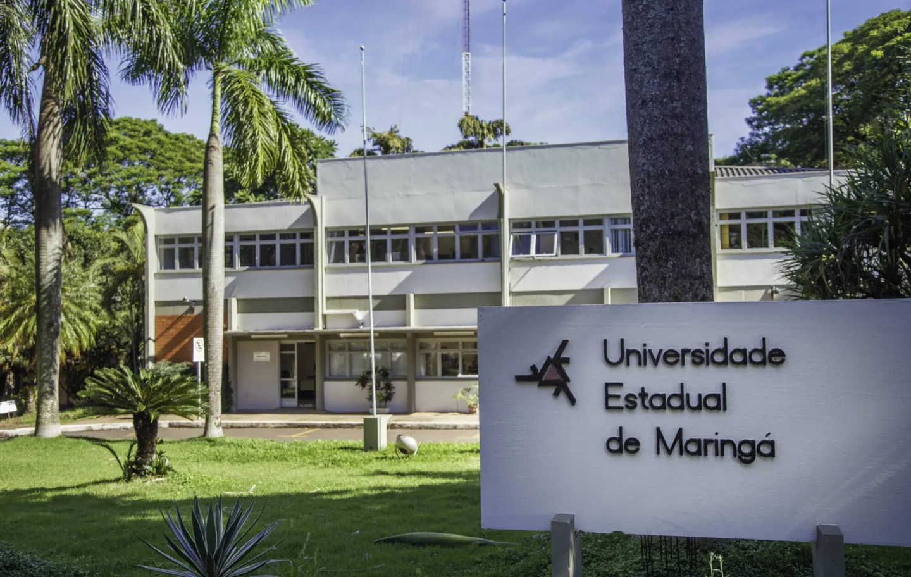

<div class="d-flex justify-content-center">
    <!-- text-justify, text-center, text-begin (a direita), text-end (a esquerda) -->
    <div class="text-justify col-md-12 row">

        <h4 class="page_title">
        <i class="fa fa-mobile-screen-button mx-1"></i>Curso de Especialização à Distância em Forense Digital (EspForUem)
        </h4>

        <hr/>

        <div class="col-md-4" style="vertical-align:middle">
            
        </div>
        <div class="col-md-8">
            <p class="text-justify" >O curso de especialização à distância em Forense Digital é <b>100% À DISTÂNCIA.</b></p>
            <p class="text-justify" >Atualmente o <acronym title="Departamento de Inform&aacute;tica">DIN</acronym> &eacute;   respons&aacute;vel por dois cursos de gradua&ccedil;&atilde;o da <acronym title="Universidade Estadual de Maring&aacute;">UEM</acronym>: Ci&ecirc;ncia da Computa&ccedil;&atilde;o   (integral) e Inform&aacute;tica (noturno), al&eacute;m da &ecirc;nfase de software do curso de Engenharia de Produ&ccedil;&atilde;o.</p>
            <p class="text-justify" >O DIN tamb&eacute;m oferece três cursos de p&oacute;s-gradua&ccedil;&atilde;o: <a href="https://espwebmob.github.io/" target="_blank">Especializa&ccedil;&atilde;o em Desenvolvimento de Sistemas para Web e Mobile</a> e <a href="https://pcc.uem.br/" target="_blank">Mestrado e Doutorado em Ci&ecirc;ncia da Computa&ccedil;&atilde;o</a>. </p>
        </div>

        <br> <br> <br> 
        <!-- <h4 class="page_title"> <i class="fa fa-history"></i> Histórico</h4>
        <hr/>
        <div class="col-md-8">
            <p class="text-justify" >Este curso teve início em 2002 com o título "Tecnologia em Desenvolvimento para Web" de forma presencial. Nesta turma houve 31 matriculados oriundos de diversas cidades do Paraná e sul de São Paulo. Destes, 19 concluiram monografia e obtiveram o certificado de conclusão do curso.</p>

            <p class="text-justify" >Em 2003 realizou-se uma reformulação pedagógica e definiu-se enfoque em desenvolvimento de sistemas de informação para Web. Efetuou-se melhorias nos laboratórios e implementou-se mais aulas práticas. Em agosto/2003 iniciou-se as aulas da segunda turma com 33 alunos matriculados vindos das cidades de Campo Grande, Campo Mourao, Castro, Goioere, Mandaguari, Maringá, Martinópolis, Palmitópolis, Presidente Prudente e Umuarama. Destes, 30 concluiram os créditos em disciplinas e atualmente estão desenvolvendo suas monografias, com previsão para término em abril/2005, para conclusão do curso.</p>
			
			<p class="text-justify" >Desde então, o curso teve 15 turmas, todas no formato presencial.</p>
			
			<p class="text-justify" ><b>Em 2024, o curso migrou para os moldes à distância (100% remoto), buscando ampliar a participação e a formação de mão de obra especializada para o Brasil e o exterior.</b></p>
        </div>
        <div class="col-md-4 text-end" style="vertical-align:middle">
            
        </div>

        <br><br> -->
        
		<h4 class="page_title"> <i class="fa fa-history"></i> Disciplinas do Curso</h4>
        <hr/>

        <p class="text-justify" >O curso é composto de <b>390 horas/aulas à distância</b> que abangem as seguintes disciplinas:</p>
		
		<ul>
			<li><b>Introdução ao Ensino à Distância (30h)</b> - Ambiente Virtual de Ensino-Aprendizagem. Ferramentas para navegação e busca na Internet. Metodologias de estudo baseadas nos princípios de autonomia, interação e cooperação.</li>
			<li><b>Metodologia de Pesquisa em Computação (30h)</b> - Tópicos avançados em aspectos teóricos, conceituais e metodológicos. Avaliações qualitativas e quantitativas aplicadas às pesquisas da área de Ciência da Computação.</li>
			<li><b>Introdução à Probabilidade e Estatística (20h)</b> - Conceitos fundamentais de estatística descritiva e inferencial, Análise exploratória de dados por meio de tabelas, gráficos e medidas descritivas. Cálculos de probabilidade e conceitos de inferência estatística para tomada de decisão baseando-se em uma amostra.</li>
			<li><b>Introdução às Ciências Forenses (15h)</b> - Esclarecimento dos conceitos de ciência forense, criminalística, perícia e a interface multidisciplinar destes. Apresentação das múltiplas áreas do saber e suas contribuições para a justiça (na consolidação das ciências forenses), com expansão da visão do estudante para além de seu campo específico de atuação.</li>			            
            <li><b>Experimentação Controlada em Forense Digital (20h)</b> - conceitos básicos de experimentação, projeto experimental, execução experimental, análise e interpretação de dados, documentação de experimentos e compartilhamento de artefatos.</li>			
            <li><b>Legislação Criminal e a Cadeia de Custódia da Prova (15h)</b> - Conceitos fundamentais de Direito Penal e Processual Penal. Crimes Informáticos. Compreensão dos Tribunais. Teoria Geral da Prova Penal. Provas Penais. Cadeia de Custódia da Prova. Interpretação Jurisprudencial.</li>			
            <li><b>Programação em Python (40h)</b> - Introdução à programação com Python: Controle de fluxo (condicionais e loops), estruturas de dados fundamentais (listas e dicionários). Funções. Estudos de bibliotecas (Pandas, Numpy, Matplotlib, etc.). Desenvolvimento de um projeto prático.</li>			
            <li><b>Fundamentos de Inteligência Artificial (25h)</b> - Introdução à inteligência artificial. Agentes inteligentes e sistemas especialistas. Introdução ao aprendizado de máquina.</li>			
            <li><b>Ciência de Dados para Forense Digital (25h)</b> - Introdução à Ciência de Dados e Coleta de Dados. Análise Exploratória e Visualização de Dados. Ciência de Dados na Forense Digital. Projeto Prático.</li>
            <li><b>Aspectos de Segurança Forense e Criptografia (25h)</b> - Criptografia: cifras de fluxo e cifras de bloco. Entendimento de privacidade, autenticidade, integridade e não repúdio de mensagens. Conhecimento de criptografia simétrica, aritmética modular; números primos e fatoração, funções e geradores pseudo-aleatórios, e criptografia assimétrica. Perícias digital em dados de informática e computação. Software e hardware para computação forense. Perícias em equipamentos portáteis. Vulnerabilidade em sistemas computacionais. Rastreabilidade de dados e de comunicações eletrônicas.</li>
            <li><b>Perícia Forense em Dispositivos Móveis (40h)</b> - Introduzir conhecimentos fundamentais de redes de telefonia celular e sua relação com a perícia de dispositivos móveis. Apresentar aspectos gerais das perícias em dispositivos móveis, partindo para sua aplicação em dispositivos com sistema operacional Android e, em seguida, iOS.</li>
            <li><b>Fundamentos de Cibersegurança para Forense Digital (40h)</b> - Conceitos fundamentais de cibersegurança, inteligência de ameaças, segurança de endpoints, governança em segurança da informação, criptografia e integridade de dados.</li>            
            <li><b>Forense Digital em Redes de Computadores (40h)</b> - Conceitos fundamentais de redes de computadores e os principais protocolos, componentes e arquiteturas.  Processo de captura, análise, identificação e documentação de evidências. Perícias em diferentes tipos de redes, protocolos, e cenários. Ferramentas, datasets, frameworks para redes forenses.</li>
            <li><b>Desenvolvimento de Software para Perícia Forense Digital (25h)</b> - Introdução à Forensic-Readiness e Digital Forensic-Readiness. Fundamentos de Modelos de Ciclo de Vida de Software, Processos de Software e Metodologias Àgeis. Forensic-Readiness para Sistemas de Software.</li>            
            </ul>
		
		<br><br>
		
		<h4 class="page_title"> <i class="fa fa-history"></i> Corpo Docente do Curso</h4>
        <hr/>

        <p class="text-justify" >Os seguintes docentes compõem o curso:</p>
		
		<ul>
            <li><a href="http://lattes.cnpq.br/6628952189434232" target="_blank">Prof. Me. André Felipe Ribeiro Cordeiro</a> (UEM / Doutorando em Computação)</li>
            <li><a href="http://lattes.cnpq.br/9283349357180299" target="_blank">Prof. Dr. Charles Varlei Neu</a> (University of Newcastle / )</li>            
            <li><a href="http://lattes.cnpq.br/2377044759133452" target="_blank">Prof. Dr. Dante Alves Medeiros Filho</a> (UEM / Departamento de Informática)</li>            
            <li><a href="http://lattes.cnpq.br/8717980588591239" target="_blank">Prof. Dr. Edson A. Oliveira Junior</a> (UEM / Departamento de Informática)</li>
            <li><a href="http://lattes.cnpq.br/3716636700188073" target="_blank">Prof Dr. George Lucas Moraes Pezzott</a> (UEM / Departamento de Estatística)</li>
            <li><a href="http://lattes.cnpq.br/0032356414758686" target="_blank">Profa. Dra. Gisele Mendes de Carvalho</a> (UEM / Departamento de Direito Penal)</li>            
            <li><a href="http://lattes.cnpq.br/4220998164028087" target="_blank">Prof. Dr. Gustavo Noronha de Ávila</a> (UEM / Departamento de Direito Penal)</li>
            <li><a href="http://lattes.cnpq.br/6447934863145136" target="_blank">Prof. Me. Henrique Vignando</a> (????)</a></li>
            <li><a href="http://lattes.cnpq.br/4275771362524151" target="_blank">Prof. Dr. Igor da Penha Natal</a> (UEM / Departamento de Informática)</li>
            <li><a href="http://lattes.cnpq.br/3088710766475217" target="_blank">Prof. Dr. Luiz Fernando Lolli</a> (UEM / Departamento de Odontologia)</li>
            <li><a href="http://lattes.cnpq.br/6619655352703419" target="_blank">Prof. Me. Mateus de Castro Polastro</a> (Instituto de Criminalística do DF)</li>
            <li><a href="http://lattes.cnpq.br/3603496659156120" target="_blank">Profa. Dra. Thelma Elita Colanzi Lopes</a> (UEM / Departamento de Informática)</li>            
            <li><a href="http://lattes.cnpq.br/3661911595110233" target="_blank">Prof. Vinícius Eduardo Ferreira</a> (UEM / Mestrando em Ciência da Computação)</li>            
		</ul>

        
        
        
        
        
        
        
        
        
        


        
		<br><br>
		
		<!-- <h4 class="page_title"> <i class="fa fa-history"></i> Trabalho de Conclusão de Curso (TCC)</h4> -->
        <hr/>

        <p class="text-justify" ></p>
		
		
        
		
		
		
		<br><br>
		<p class="text-justify" >Venha fazer uma visita e conhecer nossa estrutura e a equipe EspForUem.</p>
        <p class="text-justify"><span ><span class="style26"><strong>Universidade Estadual de Maring&aacute;</strong><br />
        <strong>Departamento de Inform&aacute;tica<br />
        Curso EspWebMob<br />
        </strong>Av. Colombo, 5790 - <acronym title="Universidade Estadual de Maring&aacute;">UEM</acronym> - Bloco C56 - <strong>CEP:</strong>&nbsp; 87020-900 <br />
        <strong>Tel.:</strong> (44)   		  3011-4324 / 3011-4219<br />
        <strong>E-mail.:</strong> espforuem@gmail.com</span></span></p>
        <p class="text-justify" >&nbsp;</p>

        
    </div>
    
    

</div>
